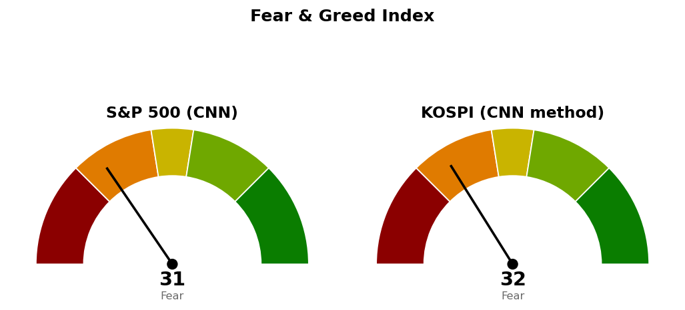

시황 2026-11-17 07:06
시황 리포트 · 2026-11-17
한 줄 결론 S&P 500 7,417(-1.92% ) 마감 → 다음 지지 7,470 일봉 종가 이탈. 하방 갈래 진행.; S&P 500: 일봉 종가 7,470 상회 시 상방(도착지 7,530), 일봉 종가 7,350 하회 시 7,300~7,350 구간 아래로.; 나스닥 24,510(-2.49% ) 마감 → 다음 지지 24,500 위 10포인트. 일봉 종가 25,685 상회 시 상방, 24,500 하회 시 24,000~24,262 구간.; 나스닥 일봉 종가 24,262 하회 시 매수 계획 종료 → 산 두 회차(25,131 · 24,425) 다음 세션 전량 매도 (사다리 취소).; SPY 746달러에서 전량 매도 (손절). 새 ETF 스윙 계획 없음.
손절·무효화 기준 나스닥 일봉 종가 24,262 하회 시 산 회차(25,131 · 24,425) 다음 세션 전량 매도 (사다리 취소), 계좌 -0.08% .
S&P 500 일봉 종가 7,100 하회 시 매수 계획 종료, 산 회차 다음 세션 전량 매도 (사다리 취소).
QQQ 640달러 장중 도달 시 전량 매도 (손절).
S&P 500 일봉 종가 200일선 7,343 하회 시 ETF 신규 진입 보류(지수 사다리는 무관).
지수 기준선은 일봉 종가로만 판정. 장중 이탈은 무효가 아니라 관찰 단계.
장전 예측 검증
2026-11-16 장전 예측 4건: 4건 중 3건 적중(75.0%)
예측 근거 실제 판정 S&P 500 종가 7,470 상회 다음 지지 7,470(피보나치 61.8% 되돌림) · 11/13 저가 7,499에서 종가 7,562 · S&P 500 선물 -0.65% 7,534 종가 7,417 (-1.92% ) 빗나감 나스닥 종합 종가 25,137 하회 200일선 25,137 · 11/13 종가 25,136 · 나스닥100 선물 -1.39% 27,645 · 엔비디아 CEO 사임 여파 종가 24,510 (-2.49% ) 적중 기술 (XLK), S&P 500 대비 약세 마감 20일 초과수익 -5.91% 최하위 · 11/13 1일 -1.60% p · 나스닥100 선물 -1.39% 대 S&P 500 선물 -0.65% -3.24% 대 S&P 500 -1.92% 적중 헬스케어 (XLV), S&P 500 대비 강세 마감 20일 초과수익 +8.15% 1위 · 11/13 1일 +0.95% p -0.51% 대 S&P 500 -1.92% 적중
US 최근 90일 누적 87건 중 64건 적중(73.6%) · 최근 20건 20건 중 12건 적중(60.0%)
S&P 500: 시가 7,514 → 고가 7,516 → 저가 7,400 → 종가 7,417. 7,470 상회는 53포인트 차이로 빗나감. 선물 -0.65% 보다 지수가 -1.92% 로 더 밀림.
직전 브리핑(2026-11-16 장전) 판정
직전 장전 판단 중 S&P 500 종가 7,470 상회는 틀림. 가격은 11/13 마감 후 브리핑 등록값 그대로. 가격 판정 방식 11/16 결과 나스닥 기준선 25,685 일봉 종가 상회 미충족 · 고가 24,882 나스닥 다음 지지 24,500 일봉 종가 하회 미충족 · 저가 24,460, 종가 24,510 나스닥 취소선 24,262 일봉 종가 하회 미충족 S&P 500 기준선 7,649 일봉 종가 상회 미충족 · 고가 7,516 S&P 500 다음 지지 7,470 일봉 종가 하회 충족 · 종가 7,417 S&P 500 사다리 7,314 · 7,113 장중 저가 도달 미도달 · 저가 7,400 SPY 손절 746달러 장중 저가 도달 충족 · 저가 738.07달러 QQQ 손절 640 · 목표 702달러 장중 도달 둘 다 미도달 · 종가 661.75달러 XLY 진입 122달러 일봉 종가 상회 미충족 · 118.15달러
도달 범위: 직전이 적은 "그 아래 7,363~7,400"에서 S&P 500 저가 7,400 → 구간 상단에서 멈춤. 계획: 나스닥은 직전 계획 그대로 유지. S&P 500은 하방 갈래로 살아 있음. 옮긴 가격(S&P 500): 기준선 7,649→7,470, 도착지 7,700→7,530, 다음 지지 7,470→7,350. 7,470이 종가로 깨져 되찾아야 할 선이 됐고, 7,649는 현재가에서 하루 평균 변동폭의 2.08배 위. 사다리·취소선은 그대로.
지수 계획
20일선·50일선은 지수이동평균, 200일선은 단순이동평균. 경로를 말할 근거가 없어 방향은 말하지 않음 → 기준선과 두 갈래만 냄. 사다리는 지수 포인트로만 적음. S&P 500 (^GSPC) · 11/16 종가 7,417 · 하루 변동폭 112
오른쪽 숫자: 현재가와의 거리 · 하루 평균 변동폭의 몇 배인지
도착지 7,530 7,500~7,541 구간(7번 반응한 가격 · 9/16 스윙 저점 · 피보나치 50% 되돌림) · 장중 고가 도달로 판정 · 직전 7,700에서 내림기준선 7,470 일봉 종가 상회로 판정 · 11/16 종가로 잃은 피보나치 61.8% 되돌림 · 직전 7,649에서 내림현재 7,417 11/16 종가 -1.92% · 20일선 7,583 대비 -2.20% · 50일선 7,629 대비 -2.78% · 200일선 대비 +1.01% · 상대강도지수 40.2다음 지지 7,350 일봉 종가 하회로 판정 · 11/5 스윙 저점 · 200일선 7,343 바로 위 · 못 지키면 7,225~7,238 · 직전 7,470에서 내림사다리 1차 7,314 계좌의 2% · 장중 저가 도달 시 · 7,300~7,350 구간 안 · 직전과 같음사다리 2차 7,113 계좌의 2% · 장중 저가 도달 시 · 7,100~7,134 구간 안 · 직전과 같음취소선 7,100 일봉 종가 하회 시 매수 계획 종료 · 최대 손실 계좌 -0.06% · 직전과 같음기준선 7,470과 다음 지지 7,350 모두 한 세션 안에 닿는 거리. 7,470 종가 이탈은 1회째라 관찰 단계. 다음 세션들에 되찾지 못하고 7,427~7,470 구간에서 밀리면 이 구간이 저항으로 바뀜. 180일 박스 6,475~7,828, 박스 안쪽 판정 중립(지지 테스트마다 매도 거래량 감소, 저점 절하, 상승봉 대 하락봉 거래량비 1.01). 현재가는 지수 매수 자리가 아님 → 사다리 1차 7,314까지 대기. 나스닥 종합 (^IXIC) · 11/16 종가 24,510 · 하루 변동폭 547
오른쪽 숫자: 현재가와의 거리 · 하루 평균 변동폭의 몇 배인지
도착지 25,803 9/16 스윙 저점 · 25,803~26,000 구간 아래쪽 · 직전과 같음기준선 25,685 일봉 종가 상회로 판정 · 피보나치 61.8% 되돌림 · 직전과 같음사다리 1차 25,131 11/5 집행 · 계좌의 2% · 현재 -2.47% 현재 24,510 11/16 종가 -2.49% · 20일선 25,523 대비 -3.97% · 50일선 25,997 대비 -5.72% · 200일선 25,143 대비 -2.52% · 상대강도지수 37.1다음 지지 24,500 일봉 종가 하회로 판정 · 못 지키면 24,000~24,262 구간 · 직전과 같음사다리 2차 24,425 11/5 집행 · 계좌의 2% · 현재 +0.35% 취소선 24,262 일봉 종가 하회 시 매수 계획 종료 · 두 회차 물리면 계좌 -0.08% · 직전과 같음다음 지지 24,500과 취소선 24,262는 한 세션 안, 기준선 25,685는 한 세션 밖. 산 두 회차 평가손익 합계 계좌 -0.04% (1차 -0.05% , 2차 +0.01% ). 남은 회차 없음. 180일 박스 21,425~27,401, 박스 안쪽 판정 중립(지지 테스트 거래량 혼조, 저점 절하, 거래량비 1.03).
ETF 스윙
S&P 500 7,417이 200일선 7,343 위(+1.01% , 4/8부터) → 새 계획을 낼 수 있는 국면. ETF 등록일 현재 진입 손절 목표 상태 Invesco QQQ (QQQ) 2026-11-06 662 663 640 702 보유 중 (진입 2026-11-09) SPDR S&P 500 (SPY) 2026-11-11 740 759 746 777 손절 (진입 2026-11-11, 종료 2026-11-16) 에너지 (XLE) 2026-10-20 63.69 70.80 68.87 74.54 진입 대기 필수소비재 (XLP) 2026-10-23 92.60 94.21 92.40 99.40 진입 대기 헬스케어 (XLV) 2026-11-13 188 — — — 패스(진입 계획 없음) 임의소비재 (XLY) 2026-11-14 118 122 119 126 진입 대기
이번 회차 새 ETF 스윙 계획 없음. 가장 가까웠던 XLU: 눌림 매수 43.75달러 1:1.82 (손절 1.17 ATR, 평균회귀), 조건 9개 중 8개 통과(미달: 200일선 위, 200일선 44.33달러). 진입가가 현재가 44.12달러 아래라 내지 않음(데이터 상태 참조). XLV 눌림 매수 184달러 1:2.27 (손절 1.08 ATR)도 같은 이유. XLV 돌파 매수 1:0.30 (손절 2.12 ATR)·XLU 돌파 매수 1:0.55 (손절 1.80 ATR)은 패스. SPY 회복 매수 1:0.36 (손절 2.01 ATR), QQQ 회복 매수 1:0.75 (손절 2.31 ATR) → 둘 다 패스. QQQ 보유: 종가 661.75달러 기준 손절까지 -3.29% (1.31 ATR), 목표까지 +6.08% → 그 가격에서 본 손익비 1:1.85. 200일선 682.44달러 아래, 조건 9개 중 2개 통과. XLY 종가 118.15달러는 손절 119달러 아래지만 진입 전이라 무관. 진입선 122달러 종가 상회가 먼저.
주도섹터
미국 섹터 20일 초과수익 (SPDR 업종 ETF, S&P 500 대비)
헬스케어 (XLV)
+10.53%
5일 +1.53 · 1일 +1.40 · 직전 +8.15
유틸리티 (XLU)
+10.24%
5일 +2.52 · 1일 +2.10 · 6위에서 2위로
부동산 (XLRE)
+9.76%
5일 +0.89 · 1일 +1.65
필수소비재 (XLP)
+9.75%
5일 +3.65 · 1일 +2.19
금융 (XLF)
+9.23%
5일 +2.09 · 1일 +1.07
임의소비재 (XLY)
+6.79%
5일 -0.60 · 1일 +0.39 · 2위에서 6위로
소재 (XLB)
+4.59%
5일 -1.01 · 1일 +0.46
산업재 (XLI)
+2.95%
5일 -0.15 · 1일 +0.07
커뮤니케이션 (XLC)
+0.59%
5일 +1.26 · 1일 +0.20
에너지 (XLE)
−2.50%
5일 +4.59 · 1일 -0.04
기술 (XLK)
−7.84%
5일 -1.82 · 1일 -1.32 · 직전 -5.91
상위 2개 헬스케어·유틸리티 → ETF 스윙 판정 대상(XLV·XLU)과 같음. 11/16 하루 상승 마감은 필수소비재(+0.27% )·유틸리티(+0.18% ) 둘뿐. 종목 발굴: 200개 → 1차 13개 → 구조 판정 12개 → 후보 3개. 탈락은 거래대금 미달 105, 추세 미달 51, 52주 고점 대비 위치 12, 지수 대비 상대강도 미달 11, 최근 리포트 종목 8, 추격 비권장 4, 박스 판정 불가 1, 셋업 미달 1. 1순위 유나이티드헬스 (UNH)는 이 브리핑 뒤 배치가 정식 리포트를 씀. 길리어드 사이언시스 (GILD)·버텍스 파마슈티컬스 (VRTX)는 후보이며 리포트 아님. 텔레그램으로 종목명을 보내면 리포트 발행.
매크로 좌표
항목 값 직전 대비 미국 경기선행지수 101.00 (9월) 전월 대비 +0.05 · 직전 회차와 같은 값 한국 경기선행지수 102.53 (9월) 전월 대비 -0.13 · 직전 회차와 같은 값 미 10년 명목금리 확정 5.15% (11/13) · 지수 시세 5.121% (11/16) 확정 +0.05% p (11/12 대비) · 시세 -0.033% p 미 10년 기대물가 2.24% (11/13) 11/12와 같음 미 10년 실질금리 2.91% (11/13) +0.05% p (11/12 대비)유가 (WTI) 확정 89.62달러 (11/11) · 선물 85.14달러 (11/16) 확정 갱신 없음 · 선물 -3.86% 달러지수 (광의) 122.65 (11/13) +0.11 (11/12 대비) · 직전 회차 121.88(11/6) 변동성지수 (VIX) 22.91 (11/16, 장중 19.84~24.52) 전일 19.30 · +18.70%
경기선행지수: 장기 평균을 100으로 놓고 경기 방향을 몇 달 앞서 보여주는 OECD 지표. 새 발표 없음 → 해석 그대로. 11/13 명목금리 +0.05% p는 전부 실질금리(+0.05% p). 기대물가는 그대로. 같은 날 달러지수도 상승 → 실질금리와 같은 방향. 11/16 WTI 선물 -3.86% , 기대물가는 11/13까지만 있어 같은 날 대조 불가. 이 절은 지수 기준선에 반영하지 않음.
핵심 뉴스
마이크론·AMD 등 AI 반도체 매도 확대, 엔비디아 실적과 AI 생태계 자금 지원 축소 여부에 대한 경계(MarketWatch) → 같은 날 XLK -3.24% , 나스닥 -2.49% . 미 상무부가 중국의 첨단 칩 원격 접근을 막는 새 규정 발표, 엔비디아 하락 연장(MarketWatch). 해먹 클리블랜드 연은 총재가 느리고 꾸준한 금리 인상 주장 재확인(Reuters). 10년 시세는 5.121%로 -0.033% p.
투자심리

공포·탐욕 게이지 (2026-11-16) S&P 500: CNN 공식값. 1주 전 31.5, 1개월 전 18.2. 모멘텀 9.2·안전자산 수요 11.8·풋/콜 비율 19.6이 가장 낮고 정크본드 수요 52.4가 가장 높음. 코스피: CNN 방식을 한국 데이터로 재구성한 값이며 공식 지수 아님. 일곱 항목 모두 사용, 기준일 11/16. 모멘텀 3.4·주가 폭 15.6이 끌어내리고 풋/콜 비율 65.8이 끌어올림.
확인 캘린더
날짜 (미국) 이벤트 볼 것 11/17(화) 정규장 마감 S&P 500 7,470 · 7,350, 나스닥 25,685 · 24,500 · 24,262 대비 종가 · QQQ 640달러 장중 11/19(목) 신규 실업수당 청구 조회 도구에 잡힌 향후 5일 유일한 매크로 발표
엔비디아 실적 날짜는 조회 도구에 없어 미확인.
집행
1. 매수 쪽: 나스닥은 두 회차 집행 완료, 남은 회차 없음. S&P 500은 장중 저가 7,314 도달 시 계좌의 2%, 7,113 도달 시 계좌의 2% 매수. 그 밖에는 이번엔 살 자리가 없음. 2. 나스닥 일봉 종가 24,262 하회 → 매수 계획 종료, 산 회차(25,131 · 24,425) 다음 세션 전량 매도 (사다리 취소). 3. S&P 500 일봉 종가 7,100 하회 → 매수 계획 종료, 산 회차 다음 세션 전량 매도 (사다리 취소). 4. QQQ 진입 중: 640달러 장중 도달 시 전량 매도 (손절), 702달러에서 전량 매도 (목표 도달). 5. SPY: 11/16 746달러에서 전량 매도 (손절) 완료. 6. 진입 대기: XLY 122 / 119 / 126달러, XLP 94.21 / 92.40 / 99.40달러, XLE 70.80 / 68.87 / 74.54달러(진입 / 손절 / 목표). 7. S&P 500 일봉 종가 200일선 7,343 하회 시 6번 계획의 신규 진입 보류. 지수 사다리에는 적용 안 함.
다음 세션에 볼 것: 나스닥 일봉 종가가 24,500 위에 남는지.
데이터 상태
XLU·XLV 눌림 매수: ETF 계획 기록이 진입을 "종가가 진입가 위"로만 판정 → 현재가 아래에서 사는 계획을 올리면 다음 종가에 곧바로 진입한 것으로 잘못 기록됨. 11/13 회차에 이어 이번에도 이 이유로 계획을 내지 못함. SPY 체결가가 기록되지 않아 손절 손익은 계산하지 않음. 시세 조회의 코스피 값이 11/13 종가 5,291에 머물러 있음(11/16 한국 마감 후 브리핑은 5,082). 금리·기대물가·실질금리·달러지수는 11/13, WTI 확정치는 11/11까지. 변동성지수 백분위는 산출물이 없어 적지 않음. 금·장기채는 고정 목록 밖이라 실질금리와 대조 못 함. 종목 발굴 파일은 구조 판정 12개 중 후보 3개와 탈락 6개만 사유를 집계 → 나머지 3개의 탈락 사유 미확인. 뉴스 원천 중 MarketWatch MarketPulse·Yahoo Finance Top Stories가 비어 있음.
ATR(하루 평균 변동폭): 최근 14일 동안 하루에 오르내린 폭의 평균.
상대강도지수(RSI): 최근 14일 오른 폭과 내린 폭의 비율을 0~100으로 나타낸 값.
20일선·50일선: 최근 가격에 무게를 더 둔 지수이동평균.
200일선: 최근 200거래일 종가의 단순 평균.
1일·5일·20일 초과수익: 해당 기간 수익률에서 기준 지수 수익률을 뺀 값.
피보나치 되돌림: 직전 상승폭의 일정 비율로 계산한 가격선.
평균회귀: 지지로 눌렸을 때 사서 위쪽 저항에서 파는 매매 유형.
VIX(변동성지수): S&P 500 옵션 가격에서 뽑은 향후 30일 예상 변동성.
Markdown 원문